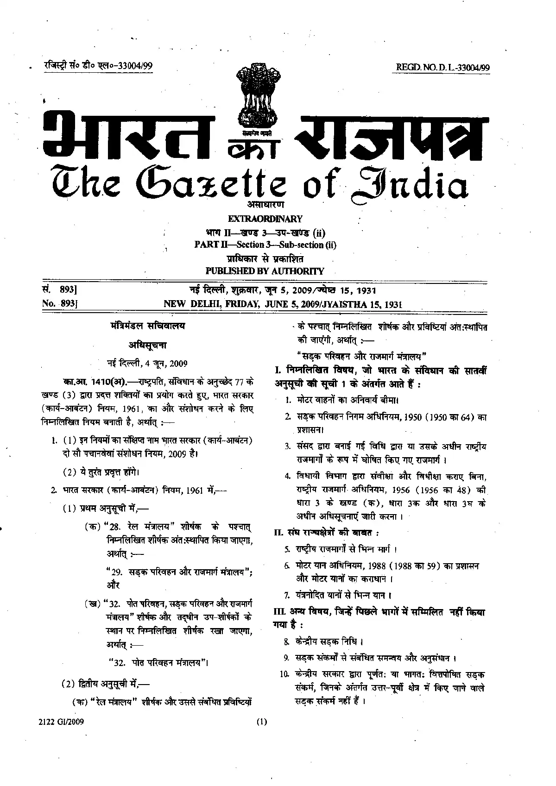
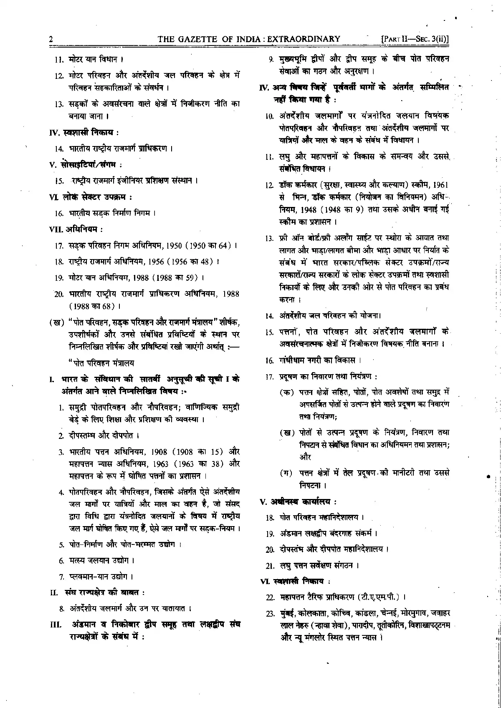
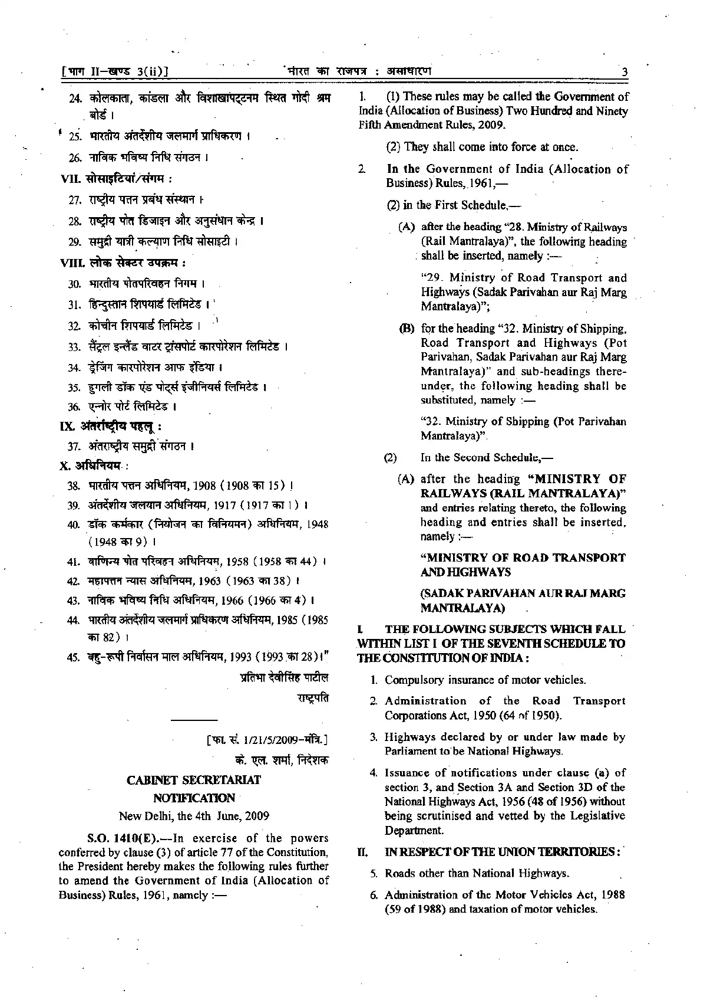
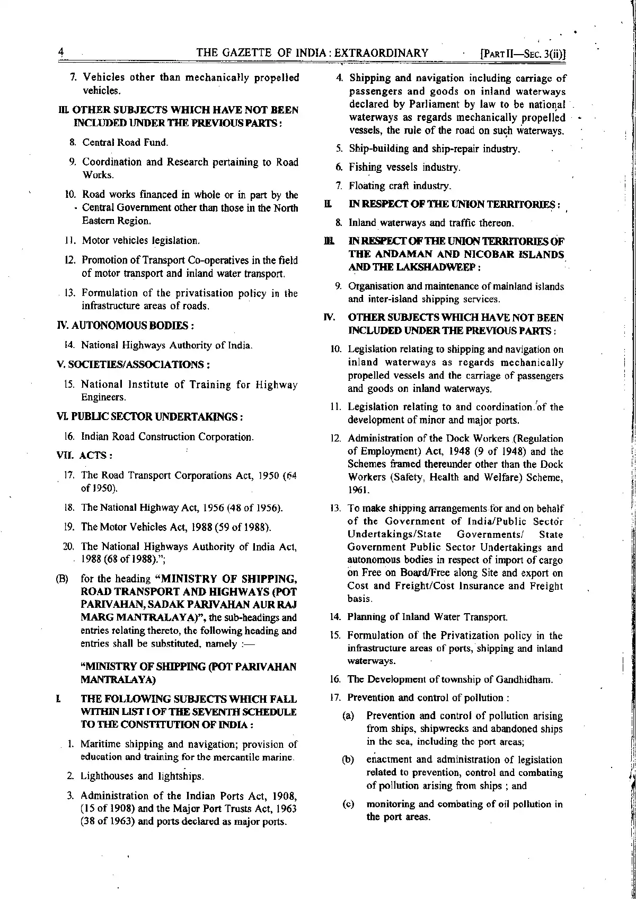
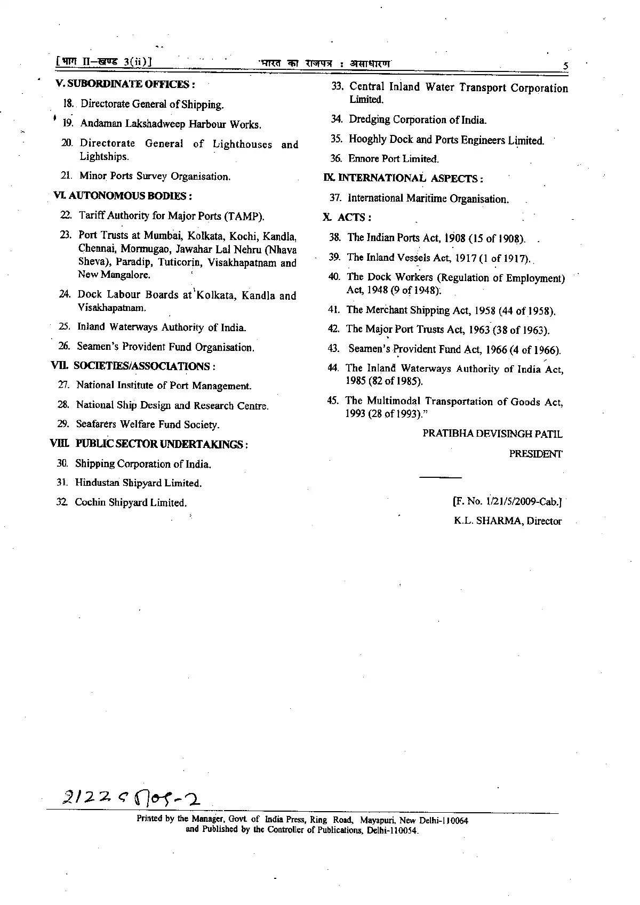

Amendment #295 (S.O. 1410(E), 2009)
4 changes: 2 to the First Schedule, 2 to the Second Schedule. 4 applied
What it did to the ministries
- splitMinistry of Shipping, Road Transport and Highways splits into Ministry of Shipping (45) and Ministry of Road Transport and Highways (20) change 1, 2, 3, 4 · histories: Shipping & Roads, Ports & Shipping, Road Transport
The order, page by page
Page 1 of 5

Page 2 of 5

Page 3 of 5

123after Schedule 1 › Ministry of Railways
- 29. Ministry of Road Transport and Highways
applied at schedule 1 › ministry 29 in the Rules after #295
Schedule 1 › Ministry of Shipping, Road Transport and Highways
- 32. Ministry of Shipping
applied at schedule 1 › ministry 32 in the Rules after #295
after Schedule 2 › MINISTRY OF RAILWAYS
- MINISTRY OF ROAD TRANSPORT AND HIGHWAYS L THE FOLLOWING SUBJECTS WHICH FALL WITHIN LIST I OF THE SEVENTH SCHEDULE TO THE CONSTITUTION OF INDIA :
- 1. Compulsory insurance of motor vehicles.
- 2. Administration of the Road Transport Corporations Act, 1950 (64 of 1950).
- 3. Highways declared by or under law made by Parliament to be National Highways.
- 4. Issuance of notifications under clause (a) of section 3, and Section 3A and Section 3D of the National Highways Act, 1956 (48 of 1956) without being scrutinised and vetted by the Legislative Department.
- II. IN RESPECT OF THE UNION TERRITORIES : `
and 21 more
- 5. Roads other than National Highways.
- 6. Administration of the Motor Vehicles Act, 1988 (59 of 1988 ) and taxation of motor vehicles.
- 7. Vehicles other than mechanically propelled vehicles.
- III. OTHER SUBJECTS WHICH HAVE NOT BEEN INCLUDED UNDER THE PREVIOUS PARTS :
- 8. Central Road Fund.
- 9. Coordination and Research pertaining to Road Works.
- 10. Road works financed in whole or in part by the . Central Government other than those in the North Eastern Region.
- 11. Motor vehicles legislation.
- 12. Promotion of Transport Co-operatives in the field of motor transport and inland water transport.
- 13. Formulation of the privatisation policy in the infrastructure areas of roads.
- IV. AUTONOMOUS BODIES:
- 14. National Highways Authority of India.
- V. SOCIETIES/ASSOCIATIONS:
- 15. National Institute of Training for Highway Engineers.
- VL. PUBLIC SECTOR UNDERTAKINGS:
- 16. Indian Road Construction Corporation.
- VII. ACTS:
- 17. The Road Transport Corporations Act, 1950 (64 of 1950).
- 18. The National Highway Act, 1956 (48 of 1956).
- 19. The Motor Vehicles Act, 1988 (59 of 1988).
- 20. The National Highways Authority of India Act 1988 (68 of 1988).
applied at schedule 2 › ministry MINISTRY OF ROAD TRANSPORT AND HIGHWAYS in the Rules after #295
read page break
Page 4 of 5

4Schedule 2 › MINISTRY OF SHIPPING, ROAD TRANSPORT AND HIGHWAYS
- MINISTRY OF SHIPPING L THE FOLLOWING SUBJECTS WHICH FALL WITHIN LIST I OF THE SEVENTH SCHEDULE TO THE CONSTITUTION OF INDIA :
- 1. Maritime shipping and navigation; provision of education and training for the mercantile marine.
- 2. Lighthouses and lightships.
- 3. Administration of the Indian Ports Act, 1908 (15 of 1908) and the Major Port Trusts Act, 1963 (38 of 1963) and ports declared as major ports.
- 4. Shipping and navigation including carriage of passengers and goods on inland waterways declared by Parliament by law to be national waterways as regards mechanically propelled vessels, the rule of the road on such waterways.
- 5. Ship-building and ship-repair industry.
and 50 more
- 6. Fishing vessels industry.
- 7. Floating craft industry.
- II. IN RESPECT OF THE UNION TERRITORIES: ·
- 8. Inland waterways and traffic thereon. IL IN RESPECT OF THE UNION TERRITORIES OF THE ANDAMAN AND NICOBAR ISLANDS AND THE LAKSHADWEEP :
- 9. Organisation and maintenance of mainland islands and inter-island shipping services.
- IV. OTHER SUBJECTS WHICH HAVE NOT BEEN INCLUDED UNDER THE PREVIOUS PARTS:
- 10. Legislation relating to shipping and navigation on inland waterways as regards mechanically propelled vessels and the carriage of passengers and goods on inland waterways.
- 11. Legislation relating to and coordination of the development of minor and major ports.
- 12. Administration of the Dock Workers (Regulation of Employment) Act, 1948 (9 of 1948) and the Schemes framed thereunder other than the Dock Workers (Safety, Health and Welfare) Scheme
- 1961.
- 13. To make shipping arrangements for and on behalf of the Government of India/Public Sector Undertakings/State Governments/ State Government Public Sector Undertakings and autonomous bodies in respect of import of cargo on Free on Board/Free along Site and export on Cost and Freight/Cost Insurance…
- 14. Planning of Inland Water Transport.
- 15. Formulation of the Privatization policy in the infrastructure areas of ports, shipping and inland waterways.
- 16. The Development of township of Gandhidham.
- 17. Prevention and control of pollution:
- a. Prevention and control of pollution arising from ships, shipwrecks and abandoned ships in the sea, including the port areas
- b. enactment and administration of legislation related to prevention, control and combating of pollution arising from ships; and
- c. monitoring and combating of oil pollution in the port areas.
- V. SUBORDINATE OFFICES :
- 18. Directorate General of Shipping.
- 19. Andaman Lakshadweep Harbour Works.
- 20. Directorate General of Lighthouses and Lightships.
- 21. Minor Ports Survey Organisation.
- VI. AUTONOMOUS BODIES:
- 22. Tariff Authority for Major Ports (TAMP).
- 23. Port Trusts at Mumbai, Kolkata, Kochi, Kandla Chennai, Mormugao, Jawahar Lal Nehru (Nhava Sheva), Paradip, Tuticorin, Visakhapatnam and New Mangalore.
- 24. Dock Labour Boards at Kolkata, Kandla and Visakhapatnam.
- 25. Inland Waterways Authority of India.
- 26. Seamen's Provident Fund Organisation.
- VII. SOCIETIES/ASSOCIATIONS :
- 27. National Institute of Port Management.
- 28. National Ship Design and Research Centre.
- 29. Seafarers Welfare Fund Society. VIIL PUBLIC SECTOR UNDERTAKINGS :
- 30. Shipping Corporation of India.
- 31. Hindustan Shipyard Limited.
- 32. Cochin Shipyard Limited. 21225609-2
- 33. Central Inland Water Transport Corporation Limited.
- 34. Dredging Corporation of India.
- 35. Hooghly Dock and Ports Engineers Limited.
- 36. Ennore Port Limited.
- IX. INTERNATIONAL ASPECTS:
- 37. International Maritime Organisation. X ACTS:
- 38. The Indian Ports Act, 1908 (15 of 1908).
- 39. The Inland Vessels Act, 1917 (1 of 1917)..
- 40. The Dock Workers (Regulation of Employment) Act, 1948 (9 of 1948).
- 41. The Merchant Shipping Act, 1958 (44 of 1958).
- 42. The Major Port Trusts Act, 1963 (38 of 1963).
- 43. Seamen's Provident Fund Act, 1966 (4 of 1966).
- 44. The Inland Waterways Authority of India Act 1985 (82 of 1985).
- 45. The Multimodal Transportation of Goods Act 1993 (28 of 1993).
applied at schedule 2 › ministry Ministry of Shipping, Road Transport and Highways in the Rules after #295
read page break
Page 5 of 5

How this document was read
From the Government of India (Allocation of Business) Rules, 1961 and their amendments, as published by the Cabinet Secretariat (cabsec.gov.in), read by orgpedia. The readings of the older scanned gazettes have known gaps.